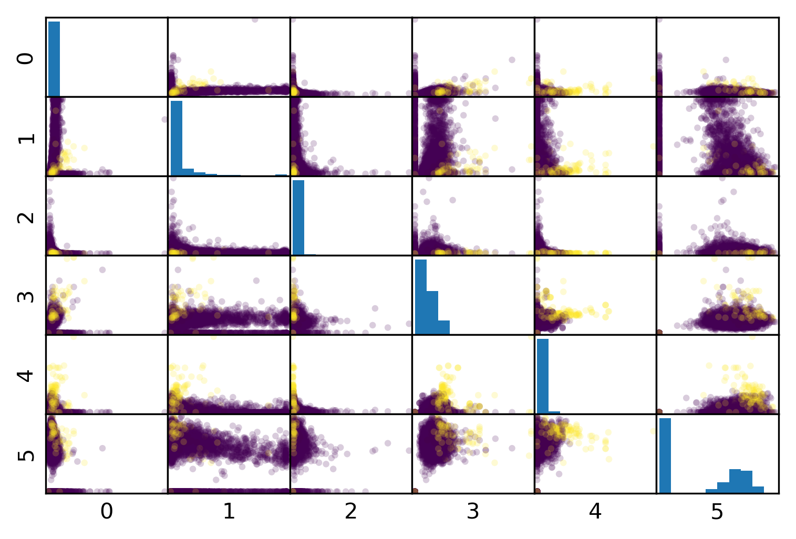

Model Evaluation
09/14/2022
Robert Utterback (based on slides by Andreas Muller)
Metrics for Binary Classification
Confusion Matrix
Positive vs. Negative
- Pos. vs. Neg. is arbitrary!
- (But often minority class = positive)
Confusion Matrix in Python
from sklearn.metrics import confusion_matrix, ConfusionMatrixDisplay
data = load_breast_cancer()
X_train, X_test, y_train, y_test = \
train_test_split(data.data, data.target,
stratify=data.target, random_state=0)
lr = LogisticRegression().fit(X_train, y_train)
y_pred = lr.predict(X_test)
cm = confusion_matrix(y_test, y_pred)
print(cm)
print(f"{lr.score(X_test, y_test):.3f}")
ConfusionMatrixDisplay(confusion_matrix=cm).plot(cmap='gray_r')
plt.savefig('img/bc_conf_matrix.png')
[[48 5] [ 5 85]] 0.930
Problems with Accuracy
Data with 90% positives:
from sklearn.metrics import accuracy_score
for y_pred in [y_pred_1, y_pred_2, y_pred_3]:
print(accuracy_score(y_true, y_pred))
0.9 0.9 0.9
Precision, Recall, \(F_1\) -score
- Precision, Positive Predictive Value (PPV):
\[ \frac{\text{TP}}{\text{TP}+\text{FP}} \]
- Recall (sensitivity, coverage, true positive rate)
\[ \frac{\text{TP}}{\text{TP}+\text{FN}} \]
- \(F_1\) -score (harmonic mean of precision and recall)
\[ 2 \frac{\text{precision} \cdot\text{recall}}{\text{precision}+\text{recall}} \]
The Zoo
Normalizing the confusion matrix
confusion_matrix(y_true, y_pred)
confusion_matrix(y_true, y_pred, normalize='true')
confusion_matrix(y_true, y_pred, normalize='pred')
Averaging strategies
- "macro", "weighted", "micro" (multi-label), "samples" (multi-label)
\[\text{macro }\frac{1}{\left|L\right|} \sum_{l \in L} R(y_l, \hat{y}_l)\] \[\text{weighted } \frac{1}{m} \sum_{l \in L} m_l R(y_l, \hat{y}_l)\]
w = recall_score(y_test, pred, average='weighted')
m = recall_score(y_test, pred, average='macro')
print(f"Weighted average: {w:.3f}")
print(f"Macro average: {m:.3f}")
Weighted average: 0.90 Macro average: 0.50
Balanced Accuracy
balanced_accuracy_score(y_t, y_p) == recall_score(y_t, y_p, average='macro')
\[ \text{balanced_accuracy} = \frac12 \left( \frac{TP}{TP+FN} + \frac{TN}{TN+FP} \right) \]
- Always 0.5 for chance predictions
- Equal to accuracy for balanced datasets
Mammography Data
from sklearn.datasets import fetch_openml
# mammography dataset https://www.openml.org/d/310
data = fetch_openml('mammography', as_frame=True)
X, y = data.data, data.target
print(X.shape)
(11183, 6)
print(y.value_counts())
-1 10923 1 260 Name: class, dtype: int64

# make y boolean -- allows sklearn to determine positive class more easily
X_train, X_test, y_train, y_test = train_test_split(X, y=='1', random_state=0)
Mammography Results
svc = make_pipeline(StandardScaler(),
SVC(C=100, gamma=0.1))
svc.fit(X_train, y_train)
print(f"{svc.score(X_test, y_test):.3f}")
print(classification_report(y_test, svc.predict(X_test)))
0.986
precision recall f1-score support
False 0.99 1.00 0.99 2732
True 0.81 0.53 0.64 64
accuracy 0.99 2796
macro avg 0.90 0.76 0.82 2796
weighted avg 0.98 0.99 0.99 2796
rf = RandomForestClassifier()
rf.fit(X_train, y_train)
print(f"{rf.score(X_test, y_test):.3f}")
print(classification_report(y_test, rf.predict(X_test)))
0.987
precision recall f1-score support
False 0.99 1.00 0.99 2732
True 0.85 0.53 0.65 64
accuracy 0.99 2796
macro avg 0.92 0.76 0.82 2796
weighted avg 0.99 0.99 0.99 2796
Goal setting!
- What do I want? What do I care about?
- Can I assign costs to the confusion matrix?
- What guarantees do we want to give?
Changing Thresholds
data = load_breast_cancer()
X_train, X_test, y_train, y_test = \
train_test_split(data.data, data.target,
stratify=data.target, random_state=0)
lr = LogisticRegression(solver='liblinear').fit(X_train, y_train)
y_pred = lr.predict(X_test)
print(classification_report(y_test, y_pred))
precision recall f1-score support
0 0.91 0.92 0.92 53
1 0.96 0.94 0.95 90
accuracy 0.94 143
macro avg 0.93 0.93 0.93 143
weighted avg 0.94 0.94 0.94 143
y_pred = lr.predict_proba(X_test)[:, 1] > .85
print(classification_report(y_test, y_pred))
precision recall f1-score support
0 0.85 1.00 0.92 53
1 1.00 0.90 0.95 90
accuracy 0.94 143
macro avg 0.93 0.95 0.93 143
weighted avg 0.95 0.94 0.94 143
Precision-Recall curve
X, y = make_blobs(n_samples=(2500, 500), cluster_std=[7.0, 2],
random_state=22)
X_train, X_test, y_train, y_test = train_test_split(X, y)
svc = SVC(gamma=.05).fit(X_train, y_train)
precision, recall, thresholds = precision_recall_curve(
y_test, svc.decision_function(X_test))
Precision-Recall curve
Comparing RF and SVC
Average Precision
\(F_1\) vs Average Precision
from sklearn.metrics import f1_score
rf_score = f1_score(y_test, rf.predict(X_test))
print(f"f1_score of random forest: {rf_score:.3f}")
svc_score = f1_score(y_test, svc.predict(X_test))
print(f"f1_score of svc: {svc_score:.3f}")
f1_score of random forest: 0.712 f1_score of svc: 0.780
from sklearn.metrics import average_precision_score
ap_rf = average_precision_score(
y_test,rf.predict_proba(X_test)[:, 1])
ap_svc = average_precision_score(
y_test, svc.decision_function(X_test))
print(f"Average precision of random forest: {ap_rf:.3f}")
print(f"Average precision of svc: {ap_svc:.3f}")
Average precision of random forest: 0.724 Average precision of svc: 0.830
ROC Curve
\[ \text{FPR} = \frac{\text{FP}}{\text{FP}+\text{TN}}\]
\[ \text{TPR} = \frac{\text{TP}}{\text{TP}+\text{FN}} = \text{recall}\]
ROC Curve
ROC AUC
- Area under ROC Curve
- Always .5 for random/constant prediction
from sklearn.metrics import roc_auc_score
rf_auc = roc_auc_score(y_test, rf.predict_proba(X_test)[:,1],
multi_class='ovr')
svc_auc = roc_auc_score(y_test, svc.decision_function(X_test))
print(f"AUC for random forest: {rf_auc:.3f}")
print(f"AUC for SVC: {svc_auc:.3f}")
AUC for random forest: 0.960 AUC for SVC: 0.973
Summary of metrics for binary classification
Threshold-based:
- accuracy
- precision, recall, f1
Ranking:
- average precision
- ROC AUC
Multiclass Classification
Hack: Reduction to Binary Classification
- One vs. Rest
- One vs. One
One vs. Rest (OVR)
- For 4 classes:
- A vs. {B,C,D}, B vs. {A,C,D}, C vs. {A,B,D}, D vs. {A,B,C}
- In general:
- \(c\) binary classifiers, each on all data points
Prediction with OVR
- Pick class with highest score: \[ \hat{y} = \text{argmax}_{i \in Y} \vec{w}_i^T \vec{x} \]
- Unclear why it works, but works well.
OVR Prediction
OVR Prediction Boundaries
One Vs. One (OVO)
- A vs. B, A vs. C, A vs. D, B vs. C, B vs. D, C vs. D
- \({c\choose{2}} = \frac{c(c-1)}{2}\) binary classifiers
- each trained on a fraction of the data
- Vote for highest positives
- Classify on all classifiers
- Count how often each class was predicted
- Return most commonly predicted class
- Works well, but again a heuristic
OVO Prediction
OVO Prediction Boundaries
OVR-OVO Comparison
OVR:
- \(c\) classifiers
- trained on imbalanced datasets of original size
- Retains some uncertainty estimates
OVO:
- \(c(c-1)/2\) classifiers
- trained on balanced subsets
- No uncertainty propagated
Multinomial Logistic Regression
\[ p(y=i | x) = \frac{\e^{w_{i}^T \vec{x}}}{\sum_j \e^{w_{j}^T \vec{x}}} \] \[ \minw \sum_{i=1}^c \log(p(y=y_i | x_i)) \] \[ \hat{y} = \text{argmax}_{i \in Y} w_i \vec{x} \]
- Same prediction rule as OVR.
In scikit-learn
- OVO: Only SVC
- OVR: default for all linear models except
LogisticRegression clf.decision_function\(=w^T x\)clf.predict_probagives probabilities for each classSVC(probability=True)not great
Multiclass in Practice
iris = load_iris()
X,y = iris.data, iris.target
print(X.shape)
print(np.bincount(y))
logreg = LogisticRegression(multi_class="multinomial",
random_state=0,
solver="lbfgs").fit(X,y)
linearsvm = LinearSVC().fit(X,y)
print(logreg.coef_.shape)
print(linearsvm.coef_.shape)
(150, 4) [50 50 50] (3, 4) (3, 4)

logreg.coef_
Multi-class classification
Confusion Matrix
from sklearn.datasets import load_digits
from sklearn.metrics import accuracy_score
digits = load_digits()
# data is between 0 and 16
X_train, X_test, y_train, y_test = \
train_test_split(digits.data / 16.,
digits.target, random_state=0)
lr = LogisticRegression().fit(X_train, y_train)
pred = lr.predict(X_test)
print(f"Accuracy: {accuracy_score(y_test, pred):.3f}")
print(confusion_matrix(y_test, pred))
Accuracy: 0.962 [[37 0 0 0 0 0 0 0 0 0] [ 0 40 0 0 0 0 1 0 1 1] [ 0 0 44 0 0 0 0 0 0 0] [ 0 0 0 43 0 0 0 0 1 1] [ 0 0 0 0 37 0 0 1 0 0] [ 0 0 0 0 0 46 0 0 0 2] [ 0 1 0 0 0 0 51 0 0 0] [ 0 0 0 0 2 0 0 46 0 0] [ 0 3 1 0 0 1 0 0 43 0] [ 0 0 0 0 0 1 0 0 0 46]]
print(classification_report(y_test, pred))
precision recall f1-score support
0 1.00 1.00 1.00 37
1 0.91 0.93 0.92 43
2 0.98 1.00 0.99 44
3 1.00 0.96 0.98 45
4 0.95 0.97 0.96 38
5 0.96 0.96 0.96 48
6 0.98 0.98 0.98 52
7 0.98 0.96 0.97 48
8 0.96 0.90 0.92 48
9 0.92 0.98 0.95 47
accuracy 0.96 450
macro avg 0.96 0.96 0.96 450
weighted avg 0.96 0.96 0.96 450
Multi-class ROC AUC
- Hand & Till, 2001, one vs one
\[ \frac{1}{c(c-1)}\sum_{j=1}^{c}\sum_{k \neq j}^{c} AUC(j,k)\]
- Provost & Domingo, 2000, one vs rest
\[ \frac{1}{c}\sum_{j=1}^{c}p(j) AUC(j,\text{rest}_j)\]
Summary of metrics for multiclass classification
Threshold-based:
- accuracy
- precision, recall, f1 (macro average, weighted)
Ranking:
- OVR ROC AUC
- OVO ROC AUC
Picking Metrics
Picking metrics
- Accuracy rarely what you want
- Problems are rarely balanced
- Find the right criterion for the task
- OR pick one arbitrarily, but at least think about it
- Emphasis on recall or precision?
- Which classes are the important ones?
Using metrics in cross-validation
X, y = make_blobs(n_samples=(2500, 500), cluster_std=[7.0, 2],
random_state=22)
# default scoring for classification is accuracy
scores_default = cross_val_score(SVC(gamma='auto'), X, y, cv=3)
# providing scoring="accuracy" doesn't change the results
explicit_accuracy = cross_val_score(SVC(gamma='auto'), X, y,
scoring="accuracy", cv=3)
# using ROC AUC
roc_auc = cross_val_score(SVC(gamma='auto'), X, y, scoring="roc_auc", cv=3)
print(f"Default scoring: {scores_default}")
print(f"Explicit accuracy scoring: {explicit_accuracy}")
print(f"AUC scoring: {roc_auc}")
Default scoring: [0.92 0.904 0.913] Explicit accuracy scoring: [0.92 0.904 0.913] AUC scoring: [0.93 0.885 0.923]
Built-in scoring
from sklearn.metrics import get_scorer_names
print("\n".join(sorted(get_scorer_names())))
accuracy adjusted_mutual_info_score adjusted_rand_score average_precision completeness_score explained_variance f1 f1_macro f1_micro f1_samples f1_weighted fowlkes_mallows_score homogeneity_score
log_loss mean_absolute_error mean_squared_error median_absolute_error mutual_info_score neg_log_loss neg_mean_absolute_error neg_mean_squared_error neg_mean_squared_log_error neg_median_absolute_error normalized_mutual_info_score precision precision_macro
precision_micro precision_samples precision_weighted r2 recall recall_macro recall_micro recall_samples recall_weighted roc_auc v_measure_score
Providing you your own callable
- Takes
estimator, X, y - Returns score – higher is better (always!)
def accuracy_scoring(est, X, y):
return (est.predict(X) == y).mean()
You can access the model!
from sklearn.model_selection import GridSearchCV
param_grid = {'C': np.logspace(-3, 2, 6),
'gamma': np.logspace(-3, 2, 6) / X_train.shape[0]}
grid = GridSearchCV(SVC(), param_grid=param_grid, cv=10)
grid.fit(X_train, y_train)
print(grid.best_params_)
print(grid.score(X_test, y_test))
print(len(grid.best_estimator_.support_))
{'C': 10.0, 'gamma': 0.07423904974016332}
0.9911111111111112
498
def few_support_vectors(est, X, y):
acc = est.score(X, y)
frac_sv = len(est.support_) / np.max(est.support_)
# Just made this up, don't use
return acc / frac_sv
param_grid = {'C': np.logspace(-3, 2, 6),
'gamma': np.logspace(-3, 2, 6) / X_train.shape[0]}
grid = GridSearchCV(SVC(), param_grid=param_grid, cv=10,
scoring=few_support_vectors)
grid.fit(X_train, y_train)
print(grid.best_params_)
print((grid.predict(X_test) == y_test).mean())
print(len(grid.best_estimator_.support_))
{'C': 100.0, 'gamma': 0.007423904974016332}
0.9777777777777777
405